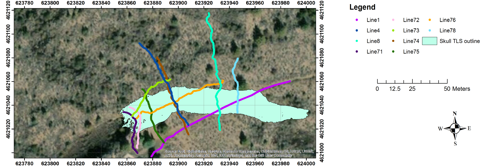

Skull Cave data - TubeX project
General info about the Skull Cave
Skull Cave (entrance, 41.7314 N, 121.5107 W) is a multilevel segment of a 36 ± 16 ka 16 km-long lava tube system that originates from Modoc crater [geologic unit bmc in Donnelly-Nolan and Champion, 1987; Donnelly-Nolan, 2010]. There are two principal levels in Skull Cave [Waters et al., 1990]. The cave entrance is the western end of the larger, upper level. This opening is on the eastern end of a collapse trench about 137 m long. The entrance offers a three-dimensional view of a blocky surface flow, one of the largest in LBNM. Skull Cave’s lower level, accessed by a pit connecting the levels, extends westward beneath the upper level. Several rooms on the lower level are floored by ice [Waters et al., 1990]. The earliest record of a visit to Skull Cave was in 1892, by E. L, Hopkins and this cave was named by him after a large accumulation of bones, including those of two humans, found at the bottom of the pit [Larson and Larson, 1990]. Bellow figure shows map of GPR and LiDAR surveys of the Skull Cave at LBNM. Green polygons represent terrestrial LiDAR scan (TLS) coverage of the tubes’ interiors. For interactive map view go to the
map tab on the webpage.
